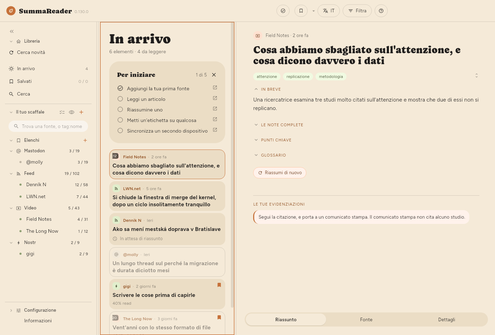

← La finestra · Indice · Riassunti →
Lettura
Fai clic su un articolo, oppure premi ↵. A seconda della finestra e della disposizione scelta in Configurazione › Base › Aspetto › Disposizione, si apre accanto all’elenco, sopra o sotto di esso, oppure occupa tutta la finestra. Su un telefono occupa sempre tutto lo schermo.

Le tre schede
- Riassunto: ciò che ha scritto il modello, in tre sezioni richiudibili: In breve (tre frasi), Punti chiave (uno per argomento, ciascuno con un titolo e un paio di frasi che lo spiegano) e Glossario (i termini che il modello ha ritenuto utile definire). I punti di un video hanno marcature temporali che portano a quel momento.
Shift+1–3li richiudono. - Fonte: l’articolo stesso, o la trascrizione.
- Dettagli: da dove viene, quando, quale modello l’ha riassunto e quanto è costato.
1–3 passano da una scheda all’altra.
I riassunti scritti prima che l’app smettesse di richiederle contengono anche Le note complete, una versione in prosa più lunga. Oggi non vengono più prodotte: ciò a cui servivano è confluito nella panoramica e nelle spiegazioni sotto ogni argomento.
La barra degli strumenti
- Salva: archivia l’articolo nell’elenco che lo scaffale mostra pieno, cioè Salvati finché non ne scegli un altro. Il ▾ accanto, un clic destro o una pressione prolungata scelgono un altro elenco o ne creano uno.
- Segna letto: sugli articoli di un feed. Con il filtro dei da leggere attivo, ti porta al successivo; l’ultimo chiude il lettore.
- Elimina: solo sugli articoli che hai conservato. Chiede conferma due volte, e la seconda dice Eliminare ovunque? perché toglie l’articolo da tutti i dispositivi che sincronizzi e impedisce a qualsiasi feed di riportarlo.
Passare da un articolo all’altro
Trascina l’articolo di lato, oppure usa j / k. Trascinando verso destra sul primo si torna all’elenco. Su un telefono, o in una finestra stretta, trascinare dal bordo sinistro riporta all’elenco e trascinare dal bordo destro apre la pagina web. Tirare oltre la fine o oltre l’inizio dell’articolo non fa niente finché non gli scegli un’azione.
Tirare agisce quando lasci andare. Quando hai tirato abbastanza, un breve suggerimento indica l’azione. Se torni indietro prima di lasciare, non succede niente. L’articolo successivo arriva allora dal basso, e il precedente dall’alto. Con j e k l’articolo cambia allo stesso modo.
Puoi dare a ognuno di questi sei gesti un’azione diversa, per esempio Segna letto / da leggere o Segna letto e apri il successivo. Si scelgono in Configurazione › Base › Navigazione › Gesti nell’articolo. Lo scorrimento di una voce dell’elenco è in Configurazione › Base › Navigazione › Gesti di scorrimento.
Su un telefono o un tablet, trascina giù l’elenco per ricaricarlo o per controllare le fonti. L’app chiede: Ricarica l’elenco o Cerca nuovi articoli. Per fare una delle due senza domanda, sceglila in Configurazione › Base › Navigazione › Gesti di scorrimento › Trascina giù l’elenco.
Scorrimento
Con l’articolo attivo, ↓ e ↑ lo spostano di alcune righe del suo testo, come uno scatto della rotellina del mouse sopra di esso. Quante righe lo decide Configurazione › Base › Navigazione › Scorrimento › Scorri di: 1, 2, 3, 5 o 8, e 3 all’inizio. Il passo segue la dimensione del testo e l’interlinea, quindi resta lo stesso numero di righe con qualsiasi impostazione. Un touchpad mantiene il proprio movimento fine.
Pagina giù e Pagina su spostano di nove decimi di schermo, così le ultime righe lette restano in alto nella schermata successiva. Home e Fine vanno all’inizio e alla fine.
Questi spostamenti scivolano nel nuovo punto invece di saltare. Configurazione › Base › Navigazione › Scorrimento › Scorrimento fluido lo disattiva. È disattivato anche quando il sistema chiede di ridurre il movimento.
Quando non c’è testo
Non tutti gli articoli arrivano con il loro testo. Il lettore dice di quale caso si tratta:
| Dice | Che cosa è successo |
|---|---|
| Questo video non ha sottotitoli | Non c’è una trascrizione da leggere |
| YouTube ha chiesto all’app di rallentare | YouTube per ora ha rifiutato i sottotitoli. Su Linux, l’app prova prima a prenderli dalla pagina del video, nel suo renderer di pagine nascosto |
| La pagina è arrivata, ma non conteneva un articolo | La pagina costruisce il testo nel browser |
| Il sito ha mostrato un controllo anti-bot | Una pagina «dimostra di essere umano» |
| Dietro un abbonamento | È arrivata l’offerta, non l’articolo |
| La pagina non c’è più | Rimossa o spostata |
| Non su questo dispositivo | Ce l’ha un altro dispositivo, o nessuno l’ha ancora scaricato |
I controlli successivi riprovano da soli, qualche volta, il caso del rallentamento. Degli altri, vale la pena riprovare solo l’ultimo, e Recupera il testo fa proprio questo.